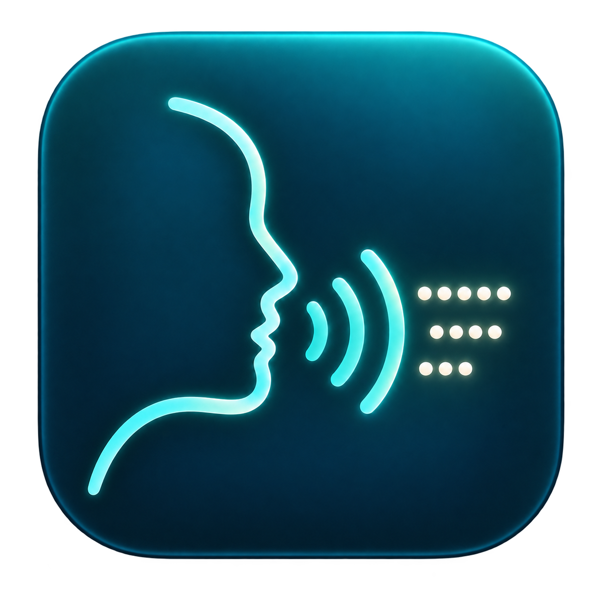

Quellcode-Vorschau · development
Anleitung
Deutsche Vorlesungen mit russischer Vertonung ansehen, während der Mac die nächsten Abschnitte vorbereitet.
Vorlesungsplayer für den Mac: lokale Erkennung deutscher Sprache, Übersetzung und russische Kseniya-Vertonung in Abschnitten. Telegram und Wiedergabe im Heimnetz.
macOS 15+ · Apple Silicon · Nur Quellcode development
Quellcode Über die App Anleitung Fehler melden
Voraussetzungen und Grenzen: Nur Quellcode, kein fertiges Installationspaket. macOS 15+, Apple Silicon, Xcode 16.4+ / Swift 6.1. Für alle Funktionen sind ein separates Runtime-Paket, Codex CLI mit ChatGPT-Anmeldung sowie Python/Torch/Silero Kseniya erforderlich. Die Installation auf einem frisch eingerichteten Mac ist noch nicht geprüft.
Erste Schritte: Zuerst Anleitung und BUILD.de.md lesen. Quellcode mit swift build kompilieren; eine vollständige .app benötigt vorbereitete Runtime-Komponenten. Video öffnen, Untertitel oder eine deutsche Tonspur wählen und Übersetzung starten.
Es gibt weder ein veröffentlichtes Installationspaket noch ein Binär-Release. Das Repository enthält die ausgewählten aktuellen Erkennungsverbesserungen; private Entwicklungshistorie und rechnergebundene Laufzeitdateien sind ausgeschlossen.
AnleitungQuellcodeÜber die App
Funktionen
- Lokale MP4/M4V/MKV-Wiedergabe, Auswahl eingebetteter Ton- und Textuntertitelspuren sowie Erkennung benachbarter SRT-Dateien.
- Abschnittsweise Erkennung deutscher Sprache, Übersetzung mit Textcache und lokale russische Silero-Kseniya-Synthese.
- Separate Lautstärke der Vertonung, Absenkung des Originaltons, Untertitelgestaltung und drei Bedienleisten-Modi.
- Telegram-Streaming über Byte-Bereiche und Browserwiedergabe im selben Heimnetz.
- M4A/SRT-Export und MP4/MKV mit separaten russischen und deutschen Spuren; Videokopie ohne Neukodierung bei kompatiblem Format.
Lektien Player – Kurzanleitung
- Öffnen wählt ein Video. Gleichnamige
.de.srt,.srtund.ru.srtim selben Ordner werden automatisch verbunden. Bibliothek zeigt die Videos eines gewählten Ordners. - Untertitel wählt externe SRT oder eine eingebettete Textspur. Alle Untertitel ausschalten blendet alles aus. Schrift, Farben, Umrandung und Hintergrund stehen unter Untertitel gestalten….
- Übersetzen startet Übersetzung, gezielte Prüfung und russische Sprachausgabe abschnittsweise. Fertige russische SRT werden wiederverwendet. Vorlesen bereitet nur die vorhandenen russischen Texte mit Silero Kseniya vor.
-
Leertaste spielt ab oder pausiert. Die Zeitleiste zeigt fertige und vorbereitete Abschnitte. Springen priorisiert die neue Stelle. Eine manuelle Pause bleibt bestehen; im Hintergrund wächst der Puffer weiter. Standard: sechs Minuten beim Abspielen, zehn Minuten in der Pause.
-
Ton mischt die eingebetteten Audiospuren. Original und Kseniya haben eigene Lautstärken. Original absenken macht den Hintergrund während der russischen Sprache sanft leiser.
- Ansicht → Position der Bedienleiste oder Einstellungen bietet drei Varianten: unter dem Video, darüber ausblenden, von unten einschieben. Die beiden überlagerten Varianten lassen sich automatisch oder mit dem Pfeil einklappen. Am unteren Rand kommen sie zurück. Die Fenstergröße bleibt dabei gleich. Die Deckkraft ist einstellbar.
- Im Vollbild befinden sich alle Tasten im unteren ausblendbaren Bedienfeld. Der untere Rand blendet es ein; oben erscheint nur die Systemleiste von macOS. Esc beendet das Vollbild. Vollbild ausfüllen wählt zwischen Beschnitt und ganzem Bild mit freien Flächen. Im Fenster bleibt das ganze Bild unter der Titelleiste sichtbar. Einstellungen → Video hinter der Titelleiste aktiviert die Überlagerung separat.
- Einstellungen → Sprache der Oberfläche wechselt Deutsch, English oder Русский. Das ändert nicht die Verarbeitung: aktuell Deutsch → Russisch mit Kseniya. Weitere Übersetzungsrichtungen und Stimmen sind geplant.
ChatGPT zeigt das verbleibende Kontingent des gesamten Kontos. Fertige Übersetzungen und Sprachabschnitte liegen im Ordner .lektien bei den Videos. Diesen Ordner beim Umzug mitnehmen. Originaldateien werden nicht ersetzt.
Ohne SRT sucht Übersetzen zuerst eingebetteten Text, dann bietet es eine deutsche Tonspur an. Mehr → Untertitel aus Video erlaubt die manuelle Auswahl. Die Erkennung läuft auf dem Mac in 30-Sekunden-Abschnitten; violette Bereiche zeigen den Vorrat. Ohne Übersetzungs-Häkchen entsteht nur deutscher Text ohne ChatGPT-Anfragen. Die vollständige .de.srt wird nach allen Abschnitten neben dem Video gespeichert. Cache und Wiedergabeposition bleiben in .lektien.
Wähle für Telegram einen Kanal und Ansehen. Das Video startet über Byte-Bereiche. Ohne externes SRT bietet Übersetzen eine deutsche Tonspur an und erkennt sie in 30-Sekunden-Abschnitten, ohne die vollständige Datei abzuwarten. Springen priorisiert die neue Stelle. Bereiche und fertige Abschnitte werden gespeichert; ein anderes Video stoppt die alte Vorbereitung. Nur erkannter Text geht an die Übersetzung. OCR ist ausgeschlossen.
Farben der Zeitleiste
Die Zeit läuft von links nach rechts. Dunkelgrau ist noch nicht vorbereitet. Kräftiges Violett: Erkennung läuft; durchscheinendes Violett: deutscher Text ist erkannt. Blau vor dem Abspielzeiger: Übersetzung oder gezielte Prüfung. Türkis: russischer Text ist fertig. Gelb-orange: Sprache wird erzeugt. Hellgrau: Ton liegt im Cache. Der gefüllte Balken links vom Abspielzeiger zeigt die bereits abgespielte Zeit in der System-Akzentfarbe, meist Blau, und überdeckt die anderen Farben.
Eine deutsche SRT überspringt die Erkennung; eine fertige russische SRT geht direkt zur Sprachausgabe. Springen priorisiert die neue Stelle und behält fertige Abschnitte.
Vertonung sichern
Mehr → Vertonung und Untertitel sichern… fragt nach einem Ordner. Falls der russische Text noch fehlt, zuerst Übersetzen starten. Das Sichern bereitet die gesamte Vorlesung vor, auch Abschnitte vor der aktuellen Position, und arbeitet in der Pause weiter. Die Wiedergabe hat Vorrang. Fertige Abschnitte werden wiederverwendet; fehlende Übersetzungen nutzen das normale Kontingent. Bei vorhandener russischer SRT sind keine Übersetzungsanfragen nötig.
Der neue Ordner enthält voice.ru.m4a, voice.ru.srt und, falls vorhanden, voice.de.srt. Die Tonspur enthält nur Kseniya, mit Pausen passend zum Video und Stille bis zum Ende; der Originalton wird nicht beigemischt. Die Wiedergabelautstärke verändert die gespeicherte Datei nicht. Gesicherte Dateien anzeigen öffnet das Ergebnis im Finder. Bei gleichem Namen entsteht ein neuer nummerierter Ordner. Sichern abbrechen stellt den normalen 6–10-Minuten-Puffer wieder her und behält den Cache. Während des Zusammenfügens wird bei Abbruch nur das vorläufige Ergebnis entfernt.
Betonung und Aussprache
Nach Telegram-Anmeldung und Auswahl des erlaubten Kanals auf dem Mac sind dessen Videos und benachbarte SRT im selben LAN-Browser verfügbar. Video, Ton und Untertitel auswählen; Wiedergabe und Sprünge nutzen Byte-Bereiche ohne vollständigen Download. Ohne Text eine deutsche Tonspur für die russische Stimme wählen und die Vorbereitung starten. Nach Start und weitem Sprung wartet der Browser auf 200 Sekunden geladene Sprache.
Neue Übersetzungen enthalten automatisch Aussprachehinweise für schwierige
Bezeichnungen und fremdsprachige Namen. Im Untertitel bleibt NF-κB stehen;
die Stimme liest die russische Bezeichnung. Eine zusätzliche Anfrage ist nicht
nötig; Hinweise werden für dieses Video gespeichert. Zahlen, Indizes, Ladungen
und einzelne griechische Zeichen werden lokal verarbeitet. Der folgende Editor
ist nur für manuelle Korrekturen nötig.
Mehr → Betonung und Aussprache… öffnet das Wörterbuch für alle Videos im
aktuellen Ordner. Beispiel: кремний => кр+емний, mit + vor dem betonten Vokal.
Ein Akzent über dem Vokal funktioniert ebenfalls: кре́мний. Bei mehrdeutigen
Wörtern hilft ein Ausdruck wie дверной замок => дверной зам+ок. Längere Ausdrücke
haben Vorrang. Kseniya bestimmt sonstige Betonungen und ё automatisch; Fehler
bleiben möglich. Kseniya anhören prüft den Entwurf lokal und pausiert das Video.
Sichern und anwenden erzeugt betroffene Audioteile neu. Übersetzung sowie
Text und Zeitmarken der Untertitel bleiben unverändert. Regeln liegen in
.lektien/pronunciation.txt neben den Videos.
Video mit Tonspuren sichern
Die russische Kseniya-Tonspur steht zuerst und ist standardmäßig aktiviert; der deutsche Originalton bleibt separat auswählbar. Russische Untertitel stehen ebenfalls zuerst und sind aktiviert, deutsche Untertitel bleiben separat und deaktiviert. Die Standardtonspur lässt sich im Sicherungsdialog ändern.
Mehr → Video mit Vertonung sichern… bietet MP4/MKV, ursprüngliche Tonspuren, Standardtonspur und RU/DE-Untertitel zur Auswahl. Danach wählst du einen Ordner. Kseniya bleibt eine separate umschaltbare Tonspur; Mischpultlautstärke und Absenkung des Originals werden nicht in die Datei eingebrannt.
Der neue Ordner enthält video.mp4 oder video.mkv sowie separate M4A/SRT-Dateien. Das Bild wird ohne Qualitätsverlust kopiert; mit MP4 inkompatibler Originalton wird in AAC umgewandelt. Wenn der Videocodec nicht zu MP4 passt, steht MKV zur Verfügung. Untertitel bleiben abschaltbar und werden nicht ins Bild eingebrannt. Die Quelldatei bleibt erhalten; bei Namensgleichheit erhält der neue Ordner eine Nummer. Für die gespeicherte MKV-Datei ist ein Player erforderlich, der ihre Codecs unterstützt.
Build und Voraussetzungen
Nur Quellcode, kein fertiges Installationspaket. macOS 15+, Apple Silicon, Xcode 16.4+ / Swift 6.1. Für alle Funktionen sind ein separates Runtime-Paket, Codex CLI mit ChatGPT-Anmeldung sowie Python/Torch/Silero Kseniya erforderlich. Die Installation auf einem frisch eingerichteten Mac ist noch nicht geprüft.
Xcode 16.4 oder neuer installieren und dessen Entwicklerverzeichnis auswählen. Im Projektordner swift build ausführen. bash scripts/build-preview.sh benötigt zusätzlich Runtime passend zu Config/runtime-manifest.json: Alle Größen und SHA-256 werden geprüft, nichts wird heruntergeladen. Der Pfad kann mit LEKTIEN_RUNTIME_DIRECTORY gesetzt werden. Modelle und Medienwerkzeuge sind nicht in Git enthalten. Das Manifest beschreibt vorhandene lokale Artefakte, keinen öffentlichen Download-Dienst. Eine automatische reproduzierbare Beschaffung der Laufzeit ist noch nicht verfügbar.
Kseniya erwartet derzeit eine vorhandene Python-Umgebung unter ~/Library/Application Support/SRTVoiceover/.venv-silero mit Python/Torch/Silero und dem Sprachmodell. Codex CLI muss separat installiert und angemeldet werden. System-Ruby wird ebenfalls verwendet. Ein Quellcode-Build installiert diese Komponenten nicht. Zugangsdaten und virtuelle Umgebungen nicht zwischen Rechnern kopieren.
Aktuelle Grenzen
- Aktuell wird Deutsch → Russisch verarbeitet; die Oberfläche bietet DE/EN/RU. Weitere Stimmen und Übersetzungsrichtungen sind geplant.
- Der Browser wartet beim Start und nach einem weiten Sprung auf 200 Sekunden Sprachpuffer; am Ende zählt die verbleibende Dauer. Während einer manuellen Pause wird weiter vorbereitet.
- Eine entfernte Wiedergabe-/Vorbereitungssitzung; lange Tests auf echten Geräten und bei schwachem WLAN stehen noch aus. Safaris HTTPS-only-Modus kann lokale HTTP-Adressen blockieren.
- OCR, Bildschirmaufnahme, Live-Übersetzung von Zoom/Teams und eine native Windows-App sind nicht implementiert.
- Erkennung und Aussprache können Fehler enthalten. Genauigkeit und lückenlose Wiedergabe auf beliebigen Geräten werden nicht garantiert.
Daten und Datenschutz
Erkennung und Synthese laufen lokal. Für die Übersetzung wird vorbereiteter Untertiteltext an den angemeldeten Dienst übermittelt. Telegram verwendet die eigene autorisierte Sitzung. Zugangsdaten verbleiben separat auf dem Mac. Quelldateien bleiben erhalten; der Cache liegt in .lektien. Die ausgewählte Bibliothek nur im vertrauenswürdigen Heimnetz freigeben und den Port nicht ins Internet weiterleiten.